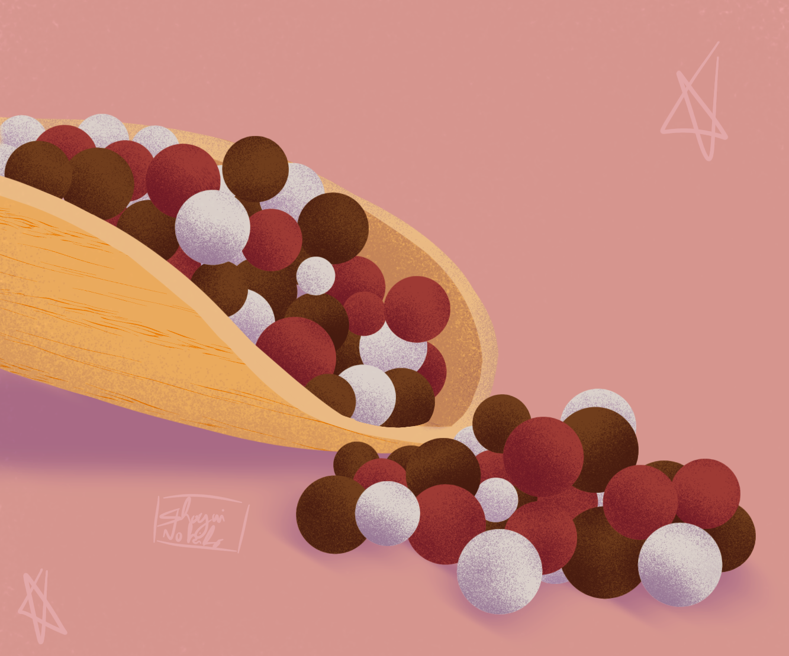

 Grains de poivre Février-Mars 2023 NourriturePlante Tags : plantenourriture Couple d'Inséparables Février-Mars 2023 Animaux Tags : animaux Précédent L'actu insolite Suivant L'Oiseau lyre
Couple d'Inséparables Février-Mars 2023 Animaux Tags : animaux Précédent L'actu insolite Suivant L'Oiseau lyre